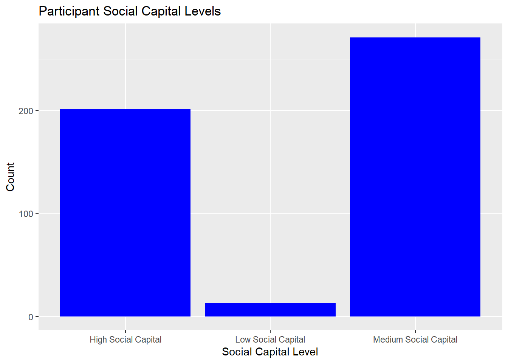
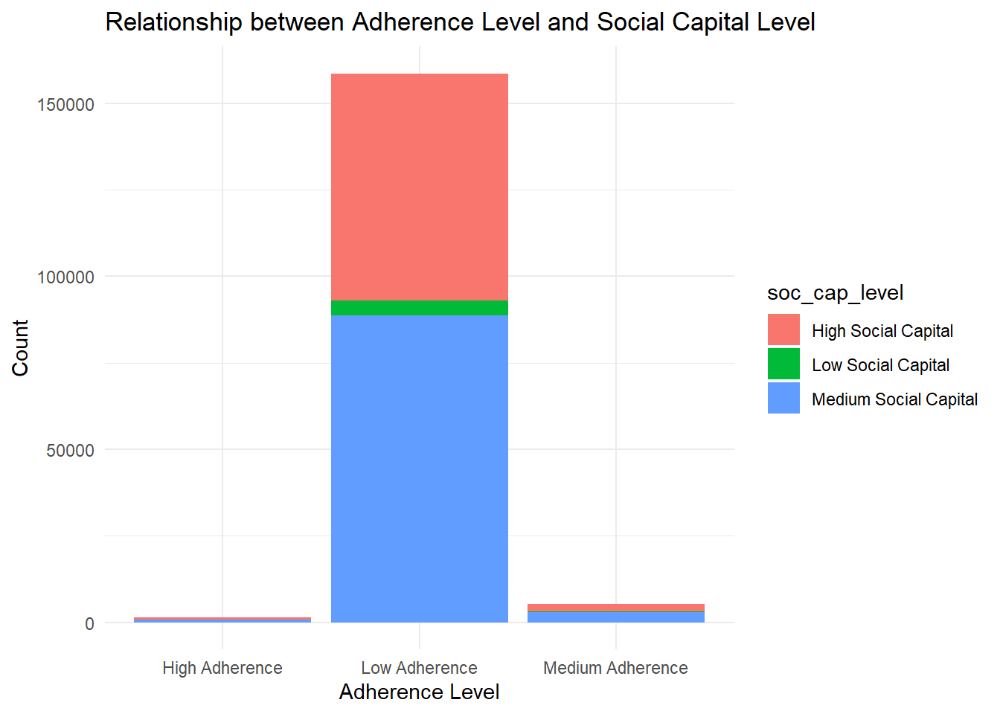

The East London Prospective Cohort study was established to track PMTCT outcomes and associated behavioural factors with a view to improving quality of care in the study setting. This survey was conducted as East London Prospective Cohort Study, which was conducted between September 2015 and May 2016 in three major maternity facilities in the Buffalo/Amathole districts of the Eastern Cape Province of South Africa.These health facilities serve a total population of 1,674,637 residents, with the Amathole district(892,637) marginally outnumbering the Buffalo City metropolitan area (755,000). The prevalence of HIV was 12.7% in the general population and 30% among pregnant women in the study setting. The sample size for the East London Prospective Cohort study was estimated using the approximate proportion of post partum women living with HIV on treatment one year after delivery in the study population.
Research Questions : what is the level of ante-retroviral medication adherence among women living with HIV?
It is important to note that the relationship between social capital and medication adherence can be complex and influenced by various factors, including cultural context, socioeconomic status, and individual characteristics. However, by leveraging social capital and strengthening supportive networks, healthcare providers and communities can potentially improve medication adherence and overall health outcomes.
The initial step in the study involved examining descriptive statistics for all the variables included. Descriptive statistics were calculated for all study variables to summarize their central tendency (e.g., mean) and variability (e.g., standard deviation). CHI-square was utilized for categorical variables. These tests were conducted to examine potential differences in participant characteristics and explore relationships between study variables. The significance level (alpha) was set at 0.05 to determine statistical significance. In the case of multiple comparisons involving continuous variables, a Bonferroni correction was applied to adjust for the increased risk of false positives (Type I error). This analysis aimed to examine the relationship between social capital and antiretroviral medication adherence while accounting for the effects of other relevant factors.
Warning: package 'broom' was built under R version 4.2.3
Reading the Dataset
# reading datasetcompliances_df <-read_dta('./Adherence at postpartum (1).dta')
DATASET DESCRIPTION.
This is a data retrieved from women living with HIV on their social wellbeing, social capital and adherence to anteretroviral medications.The data set has 165 column and 485 rows. Some of the variables were numerical while some character. To determine the relationship between adherence and controlling variable. So I reorganize the dataset to create a dataset covering all”adherence” questions. Then, I create another dataset containing all controlling variable (age, marital status, level of education). The dataset consist of null value which were not dropped because of the sample size.
It was crucial to maintain the Data quality: hence,the dataset missing values will be added to the dataset as the sample size was small that can impact the accuracy and reliability of the results.Variable selection was based on past literatures on the topic of medication adherence. The Missing Value was treated with imputation and fill with the estimated mean value of the non-missing values in the column.
# Impute NA values with meancompliances_df2 <- compliances_df %>%mutate(across(everything(), ~ifelse(is.na(.), mean(., na.rm =TRUE), .)))na_summary <- compliances_df2 %>%summarize(across(everything(), ~sum(is.na(.))))# Print the summary# print(na_summary)
#Age was collected as a continuous variable# Statistical description of data in respect to Agepsych::describe(compliances_df2$Age)
# Tabulate Agetab_age <-table(compliances_df$Age)# Tidy the tabulated resultstidy_tab_age <-as.data.frame(tab_age)# Visualize the tabulated resultsplot(density(compliances_df2$Age),col="#F5B0CB",main="Density Plot for Age",xlab="Age",ylab="Density")polygon(density(compliances_df2$Age),col="#F5B0CB")
The overall sample size is 485 women living with HIV. Of these the mean age is 32yrs(s.d=5.742912), and majority were between 28 and 34years.
DEPENDENT VARIABLE Antiretroviral Adherence: In order to assess adherence to antiretroviral medication, a 7-item questionnaire was used. This questionnaire was pretested and demonstrated validity in measuring adherence. Each item in the questionnaire asked participants about their medication-related behaviors and causal indicators. For example, participants were asked if there were any days in the past two weeks when they did not take their antiretroviral (ARV) medication. All seven items utilized a yes/no response format. The responses to the seven items were summed to create a continuous measure of self-reported adherence. The resulting estimate ranged from 0 to 7, with higher scores indicating greater adherence to the prescribed antiretroviral medication regimen. The adherence scores were then categorized using cut points. Based on previously defined categories, participants with a cumulative score of less than 6 were classified as having low adherence. Participants with a cumulative score of seven were classified as having higher adherence, meaning they regularly reported taking their medication as prescribed.
Findings The mean adherence level was 1.61 with S.D=1.14.
## Categorize adherence levelscompliances_df4 <- compliances_df3 %>%mutate(adherence_level =case_when( adherence <2~"Low Adherence", adherence >=5& adherence <7~"Medium Adherence", adherence >=7~"High Adherence",TRUE~"NA"# Assign "NA" for other cases ))# Filter out NA valuescompliances_df4_filtered <- compliances_df4 %>%filter(adherence_level !="NA")# Create the plotadherence_plot <- compliances_df4_filtered %>%ggplot(aes(x = adherence_level)) +geom_bar(fill ="steelblue") +labs(x ="Adherence Level", y ="Count", title ="Participant Adherence Levels")# Print the plotprint(adherence_plot)
Age and adherence
merged_data1 <-inner_join( compliances_df_clean %>%select(age_recode), compliances_df4_filtered %>%select(adherence_level), by =character())merged_data1_filtered <- merged_data1 %>%filter(!is.na(adherence_level))chi_sq_test1 <- merged_data1_filtered %>%count(age_recode, adherence_level) %>%spread(adherence_level, n, fill =0) %>%column_to_rownames("age_recode")bar_plot <-ggplot(merged_data1_filtered, aes(x = age_recode, fill = adherence_level)) +geom_bar() +labs(x ="Age Recode", y ="Count",title ="Relationship between Age and Adherence Level") +theme_minimal()# Display the plotprint(bar_plot)
findings: All age group have low adherence to medication.There is no statistical relationship between Age and adherence level
Educational level and Adherence level
merged_data <-inner_join( compliances_df_clean %>%select(mat_education), compliances_df4_filtered%>%select(adherence_level),by =character())merged_data <-na.omit(merged_data)bar_plot <-ggplot(merged_data, aes(x = mat_education, fill = adherence_level)) +geom_bar() +labs(x ="Education", y ="Count", title ="Relationship between Education and Adherence Level") +theme_minimal()print(bar_plot)
findings: mothers with educational level of 8-12 had low adherence to medication.
** INDEPENDENT VARIABLES Recoding Data to measure SOCIAL CAPITAL: Social capital refers to the resources, networks, and relationships that exist within a social group or community. It represents the value derived from social interactions, trust, cooperation, and reciprocity among individuals or groups.In this context it was identified as resources available to improve medication.
In the study examining the correlates of antiretroviral adherence, perceived social capital was assessed as a self-assessment of an individual’s understanding and knowledge about their social capital. To measure this, participants were asked to indicate their level of agreement on a 5-point Likert-type scale with the statement, “When I am feeling happy, I am careful not to show it.” The response options ranged from 0, indicating “Strongly Disagree,” to 4, indicating “Strongly Agree.” Participants’ responses were analyzed and averaged to construct a continuous measure of social capital. The final measure ranged from 18 to 40, signifying the total score derived by summing up the individual item replies.
Findings: The participants social capital score with a mean (36.5649) s.d=+/-3.33 (scored from 9 to 40). with a median score of 36.
Visualization of social capital level
# categorize social capital into levelcompliances_df_soccap <- compliances_df_soccap %>%mutate(soc_cap_level =case_when( soc_cap <=30~"Low Social Capital", soc_cap >=31& soc_cap <38~"Medium Social Capital", soc_cap >=38~"High Social Capital" ))social_cap_plot <-ggplot(compliances_df_soccap, aes(x = soc_cap_level)) +geom_bar(fill ="blue") +labs(x ="Social Capital Level", y ="Count", title ="Participant Social Capital Levels")print(social_cap_plot)

Findings: Majority of Participants had medium level of social capital within the social capital score of 31 -38 out of 40.
Participants social capital and adherence level
merged_data <-inner_join( compliances_df_soccap %>%select(soc_cap_level), compliances_df4_filtered %>%select(adherence_level),by =character()) %>%mutate(soc_cap_level =ifelse(is.na(soc_cap_level), "NA", soc_cap_level),adherence_level =ifelse(is.na(adherence_level), "NA", adherence_level)) %>%filter(soc_cap_level !="NA"& adherence_level !="NA")# Create a stacked bar plotbar_plot <-ggplot(merged_data, aes(x = adherence_level, fill = soc_cap_level)) +geom_bar() +labs(x ="Adherence Level", y ="Count",title ="Relationship between Adherence Level and Social Capital Level") +theme_minimal()# Display the plotprint(bar_plot)

LIMITATION OF DATASET:
The dataset used for analysis have a limited number of observations that can affect the generalizability of the findings to a larger population. Also there might be mistakes when handling errors and outliers that can impact the accuracy and reliability of the results.
Additionally, there was inadequate knowledge to determine data multicollinearity Also, the test item was on a likert scale which should be assessed and validated, this was challenging.
CONCLUSION:
The analyzed results provide evidence that maternal education is associated with adherence level. It suggests that higher levels of maternal education might be associated with higher levels of adherence, and lower levels of education might be associated with lower adherence. These findings can contribute to a better understanding of the factors influencing adherence and help guide interventions or strategies to improve adherence levels.
REFERENCE 1 Jialie Fang, Ji-Wei Wang, Jiang Li, Hua Li & Chunhai Shao (2017) The correlates of social capital and adherence to healthy lifestyle in patients with coronary heart disease, Patient Preference and Adherence, , 1701-1707, DOI: 10.2147/PPA.S140787 To link to this article: https://doi.org/10.2147/PPA.S140787 2 Moudatsou, M. M., Kritsotakis, G., Alegakis, A. K., Koutis, A., & Philalithis, A. E. (2014). Social capital and adherence to cervical and breast cancer screening guidelines: a cross-sectional study in rural Crete. Health & social care in the community, 22(4), 395–404. https://doi.org/10.1111/hsc.12096
R Language as programming language
Wickham, H., & Grolemund, G. (2016). R for data science: Visualize, model, transform, tidy, and import data. OReilly Media.
The R Graph Gallery-https://r-graph-gallery.com/
Source Code
---title: "Final Project : Project & Data Description"author: "KhadijatAdeleye"description: "Project & Data Description"date: "06/02/2023"format: html: df-print: paged toc : true code-copy: true code-tools: true css: styles.csscategories: - final_Project_assignment_1 - final_project_data_descriptioneditor_options: chunk_output_type: inline---# INTRODUCTIONThe East London Prospective Cohort study was established to track PMTCT outcomes and associated behavioural factors with a view to improving quality of care in the study setting. This survey was conducted as East London Prospective Cohort Study, which was conducted between September 2015 and May 2016 in three major maternity facilities in the Buffalo/Amathole districts of the Eastern Cape Province of South Africa.These health facilities serve a total population of 1,674,637 residents, with the Amathole district(892,637) marginally outnumbering the Buffalo City metropolitan area (755,000). The prevalence of HIV was 12.7% in the general population and 30% among pregnant women in the study setting. The sample size for the East London Prospective Cohort study was estimated using the approximate proportion of post partum women living with HIV on treatment one year after delivery in the study population. Research Questions : what is the level of ante-retroviral medication adherence among women living with HIV? It is important to note that the relationship between social capital and medication adherence can be complex and influenced by various factors, including cultural context, socioeconomic status, and individual characteristics. However, by leveraging social capital and strengthening supportive networks, healthcare providers and communities can potentially improve medication adherence and overall health outcomes. The initial step in the study involved examining descriptive statistics for all the variables included. Descriptive statistics were calculated for all study variables to summarize their central tendency (e.g., mean) and variability (e.g., standard deviation). CHI-square was utilized for categorical variables. These tests were conducted to examine potential differences in participant characteristics and explore relationships between study variables. The significance level (alpha) was set at 0.05 to determine statistical significance. In the case of multiple comparisons involving continuous variables, a Bonferroni correction was applied to adjust for the increased risk of false positives (Type I error). This analysis aimed to examine the relationship between social capital and antiretroviral medication adherence while accounting for the effects of other relevant factors.```{r}# Installing necessary packagesknitr::opts_chunk$set(echo =TRUE, warning=FALSE, message=FALSE)# Install packages (Run Only ONCE)# install.packages("haven")# install.packages("devtools")# install.packages("scales")# install.packages('rlang')###install.packages(c("ggplot2", "ggpubr", "tidyverse", "broom", "AICcmodavg"))library(tidyverse)library(haven)library(ggplot2)library(lubridate)library(dplyr)library(nnet)library(tidyr)library(broom)```# Reading the Dataset```{r}# reading datasetcompliances_df <-read_dta('./Adherence at postpartum (1).dta')```# DATASET DESCRIPTION.This is a data retrieved from women living with HIV on their social wellbeing, social capital and adherence to anteretroviral medications.The data set has 165 column and 485 rows. Some of the variables were numerical while some character.To determine the relationship between adherence and controlling variable. So I reorganize the dataset to create a dataset covering all”adherence” questions. Then, I create another dataset containing all controlling variable (age, marital status, level of education). The dataset consist of null value which were not dropped because of the sample size. Inspecting the dataset```{r}# Inspect datacheck <-function(compliances_df) { l <-list() columns <-names(compliances_df)for (col in columns) { instances <-sum(!is.na(compliances_df[[col]])) dtypes <-class(compliances_df[[col]]) unique <-length(unique(compliances_df[[col]])) sum_null <-sum(is.na(compliances_df[[col]])) duplicates <-sum(duplicated(compliances_df)) l[[length(l) +1]] <-c(col, dtypes, instances, unique, sum_null, duplicates) } data_check <-as.data.frame(do.call(rbind, l))names(data_check) <-c("column", "dtype", "instances", "unique", "sum_null", "duplicates")return(data_check)}check(compliances_df)```# TIDY THE DATA SETIt was crucial to maintain the Data quality: hence,the dataset missing values will be added to the dataset as the sample size was small that can impact the accuracy and reliability of the results.Variable selection was based on past literatures on the topic of medication adherence. The Missing Value was treated with imputation and fill with the estimated mean value of the non-missing values in the column.```{r}# Impute NA values with meancompliances_df2 <- compliances_df %>%mutate(across(everything(), ~ifelse(is.na(.), mean(., na.rm =TRUE), .)))na_summary <- compliances_df2 %>%summarize(across(everything(), ~sum(is.na(.))))# Print the summary# print(na_summary)```# Recoding the variable ```{r}#compliances_df2 %>% names() %>% str_subset("recode")#compliances_df_clean %>% names()compliances_df_clean <- compliances_df2 %>%mutate(age_recode =case_when( age_recode ==1~"Young Adult", age_recode ==2~"Middleage Adult", age_recode ==3~"Adult", age_recode ==4~"Older Adult" )) %>%mutate(maritalstatus_recode =case_when( MaritalStatus ==1~"Single", MaritalStatus ==2~"Married", MaritalStatus ==3~"Not in Union", MaritalStatus ==4~"Not in Union" )) %>%mutate(mat_education =case_when( Education <=2~"Below Grade 8", Education ==3~"Grade 8-12", Education >3~"Above Grade 12" )) %>%mutate(employ =ifelse(Salarypayingjob ==0, "Employ", "Unemploy" )) %>%replace_na(list(HaveyoudisclosedyourHIVstatustoy =2)) %>%mutate(mat_disclosure =case_when( HaveyoudisclosedyourHIVstatustoy ==1~"Disclosure", HaveyoudisclosedyourHIVstatustoy ==2~"No disclosure" )) %>%mutate(Larrangement =case_when( LivingArrangements <=3~"Isolated", LivingArrangements >3~"Not Isolated" )) %>%mutate(Haveyouconsumedanalcoholwithinth =ifelse( Haveyouconsumedanalcoholwithinth ==0, "No", "Yes"))``` Participant Age distribution```{r}#Age was collected as a continuous variable# Statistical description of data in respect to Agepsych::describe(compliances_df2$Age)# Tabulate Agetab_age <-table(compliances_df$Age)# Tidy the tabulated resultstidy_tab_age <-as.data.frame(tab_age)# Visualize the tabulated resultsplot(density(compliances_df2$Age),col="#F5B0CB",main="Density Plot for Age",xlab="Age",ylab="Density")polygon(density(compliances_df2$Age),col="#F5B0CB")``` The overall sample size is 485 women living with HIV. Of these the mean age is 32yrs(s.d=5.742912), and majority were between 28 and 34years. DEPENDENT VARIABLE Antiretroviral Adherence: In order to assess adherence to antiretroviral medication, a 7-item questionnaire was used. This questionnaire was pretested and demonstrated validity in measuring adherence. Each item in the questionnaire asked participants about their medication-related behaviors and causal indicators. For example, participants were asked if there were any days in the past two weeks when they did not take their antiretroviral (ARV) medication. All seven items utilized a yes/no response format.The responses to the seven items were summed to create a continuous measure of self-reported adherence. The resulting estimate ranged from 0 to 7, with higher scores indicating greater adherence to the prescribed antiretroviral medication regimen.The adherence scores were then categorized using cut points. Based on previously defined categories, participants with a cumulative score of less than 6 were classified as having low adherence. Participants with a cumulative score of seven were classified as having higher adherence, meaning they regularly reported taking their medication as prescribed.```{r}compliances_df3 <- compliances_df2 %>%select(Sincedeliverydoyousometimesforge, Past2weekswerethereanydaysyoudid, StoppedtakingARVmedicationbecaus, Whentravellingorleavinghomedoyou, DidyouuseARVyesterday, Whenyoufeelhealthydoyousometimes, Doyouoftenhavedifficultyremember ) %>%mutate(across(everything(), as.numeric)) %>%mutate(across(everything(), .fns =~{(max(.x)) - .x})) %>%rowwise() %>%mutate(adherence =sum(c_across(cols =everything()))) %>%ungroup()### treating the Null variable compliances_df3_adherence <- compliances_df3 %>%mutate(across(where(is.numeric), ~ifelse(is.na(.), mean(., na.rm =TRUE), .))) psych::describe(compliances_df3$adherence)``` Findings The mean adherence level was 1.61 with S.D=1.14.```{r}## Categorize adherence levelscompliances_df4 <- compliances_df3 %>%mutate(adherence_level =case_when( adherence <2~"Low Adherence", adherence >=5& adherence <7~"Medium Adherence", adherence >=7~"High Adherence",TRUE~"NA"# Assign "NA" for other cases ))# Filter out NA valuescompliances_df4_filtered <- compliances_df4 %>%filter(adherence_level !="NA")# Create the plotadherence_plot <- compliances_df4_filtered %>%ggplot(aes(x = adherence_level)) +geom_bar(fill ="steelblue") +labs(x ="Adherence Level", y ="Count", title ="Participant Adherence Levels")# Print the plotprint(adherence_plot)```Age and adherence```{r}merged_data1 <-inner_join( compliances_df_clean %>%select(age_recode), compliances_df4_filtered %>%select(adherence_level), by =character())merged_data1_filtered <- merged_data1 %>%filter(!is.na(adherence_level))chi_sq_test1 <- merged_data1_filtered %>%count(age_recode, adherence_level) %>%spread(adherence_level, n, fill =0) %>%column_to_rownames("age_recode")bar_plot <-ggplot(merged_data1_filtered, aes(x = age_recode, fill = adherence_level)) +geom_bar() +labs(x ="Age Recode", y ="Count",title ="Relationship between Age and Adherence Level") +theme_minimal()# Display the plotprint(bar_plot)``` findings: All age group have low adherence to medication.There is no statistical relationship between Age and adherence levelEducational level and Adherence level```{r}merged_data <-inner_join( compliances_df_clean %>%select(mat_education), compliances_df4_filtered%>%select(adherence_level),by =character())merged_data <-na.omit(merged_data)bar_plot <-ggplot(merged_data, aes(x = mat_education, fill = adherence_level)) +geom_bar() +labs(x ="Education", y ="Count", title ="Relationship between Education and Adherence Level") +theme_minimal()print(bar_plot)```findings: mothers with educational level of 8-12 had low adherence to medication.** INDEPENDENT VARIABLES Recoding Data to measure SOCIAL CAPITAL: Social capital refers to the resources, networks, and relationships that exist within a social group or community. It represents the value derived from social interactions, trust, cooperation, and reciprocity among individuals or groups.In this context it was identified as resources available to improve medication.In the study examining the correlates of antiretroviral adherence, perceived social capital was assessed as a self-assessment of an individual's understanding and knowledge about their social capital. To measure this, participants were asked to indicate their level of agreement on a 5-point Likert-type scale with the statement, "When I am feeling happy, I am careful not to show it." The response options ranged from 0, indicating "Strongly Disagree," to 4, indicating "Strongly Agree." Participants' responses were analyzed and averaged to construct a continuous measure of social capital. The final measure ranged from 18 to 40, signifying the total score derived by summing up the individual item replies.```{r}compliances_df_soccap <- compliances_df2 %>%select(haveaclosefriend, stopandtalkwithpeopleinneighbour, socialnetworkgroup, satifiedwithfamilylife, satisfiedwithsociallife, relyonfriendandfamilyifIhaveaser, givespecialhelptoatleastonesickd, borrowthingsandexchangefavourswi ) %>%mutate(across(everything(), as.numeric)) %>%mutate(satifiedwithfamilylife =ifelse( satifiedwithfamilylife ==22, 4, satifiedwithfamilylife)) %>%mutate(across(everything(), .fns =~{(1+max(.x)) - .x})) %>%rowwise() %>%mutate(soc_cap =sum(c_across(cols =everything()))) %>%ungroup()social_capital <- compliances_df_soccap %>%summarise(mean_sc =mean(soc_cap),mode_sc =mode(soc_cap),median_sc =median(soc_cap),sd =sd(soc_cap) )soc_cap_counts <- compliances_df_soccap %>%count(soc_cap)print(social_capital)``` Findings: The participants social capital score with a mean (36.5649) s.d=+/-3.33 (scored from 9 to 40). with a median score of 36. Visualization of social capital level```{r}# categorize social capital into levelcompliances_df_soccap <- compliances_df_soccap %>%mutate(soc_cap_level =case_when( soc_cap <=30~"Low Social Capital", soc_cap >=31& soc_cap <38~"Medium Social Capital", soc_cap >=38~"High Social Capital" ))social_cap_plot <-ggplot(compliances_df_soccap, aes(x = soc_cap_level)) +geom_bar(fill ="blue") +labs(x ="Social Capital Level", y ="Count", title ="Participant Social Capital Levels")print(social_cap_plot)``` Findings: Majority of Participants had medium level of social capital within the social capital score of 31 -38 out of 40. Participants social capital and adherence level```{r}merged_data <-inner_join( compliances_df_soccap %>%select(soc_cap_level), compliances_df4_filtered %>%select(adherence_level),by =character()) %>%mutate(soc_cap_level =ifelse(is.na(soc_cap_level), "NA", soc_cap_level),adherence_level =ifelse(is.na(adherence_level), "NA", adherence_level)) %>%filter(soc_cap_level !="NA"& adherence_level !="NA")# Create a stacked bar plotbar_plot <-ggplot(merged_data, aes(x = adherence_level, fill = soc_cap_level)) +geom_bar() +labs(x ="Adherence Level", y ="Count",title ="Relationship between Adherence Level and Social Capital Level") +theme_minimal()# Display the plotprint(bar_plot)```# LIMITATION OF DATASET:The dataset used for analysis have a limited number of observations that can affect the generalizability of the findings to a larger population. Also there might be mistakes when handling errors and outliers that can impact the accuracy and reliability of the results. Additionally, there was inadequate knowledge to determine data multicollinearity Also, the test item was on a likert scale which should be assessed and validated, this was challenging. # CONCLUSION: The analyzed results provide evidence that maternal education is associated with adherence level. It suggests that higher levels of maternal education might be associated with higher levels of adherence, and lower levels of education might be associated with lower adherence. These findings can contribute to a better understanding of the factors influencing adherence and help guide interventions or strategies to improve adherence levels.REFERENCE1 Jialie Fang, Ji-Wei Wang, Jiang Li, Hua Li & Chunhai Shao (2017) The correlates of social capital and adherence to healthy lifestyle in patients with coronary heart disease, Patient Preference and Adherence, , 1701-1707, DOI: 10.2147/PPA.S140787 To link to this article: https://doi.org/10.2147/PPA.S1407872 Moudatsou, M. M., Kritsotakis, G., Alegakis, A. K., Koutis, A., & Philalithis, A. E. (2014). Social capital and adherence to cervical and breast cancer screening guidelines: a cross-sectional study in rural Crete. Health & social care in the community, 22(4), 395–404. https://doi.org/10.1111/hsc.12096R Language as programming languageWickham, H., & Grolemund, G. (2016). R for data science: Visualize, model, transform, tidy, and import data. OReilly Media.The R Graph Gallery-https://r-graph-gallery.com/